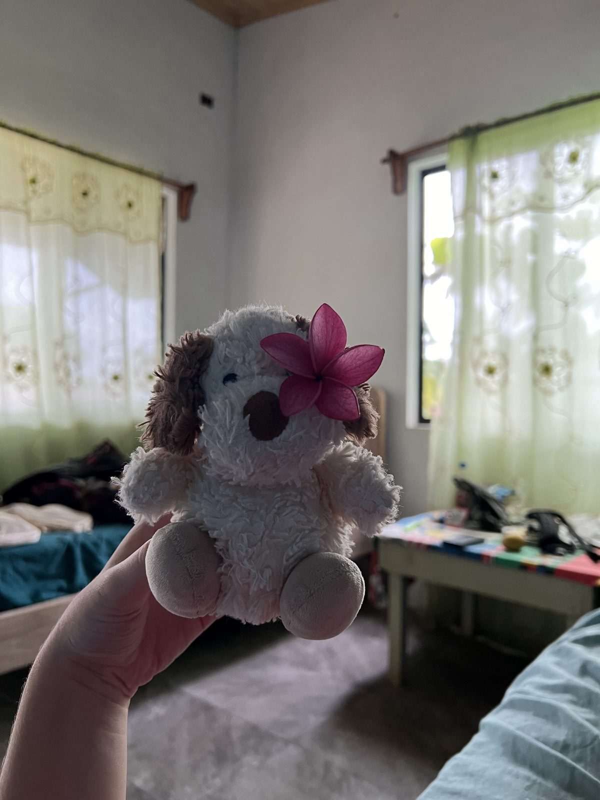

Bienvenou ici c'est les aventures dou meilleur Toniou. Je suis un ours ou chien, je traffique dou sourcre avec les autres nounours J'aime voyager avec mes deux parents, mais toujours on se retrouve dans des lieux fous J'ai hate de vous montrer les lieux que j'ai vu
